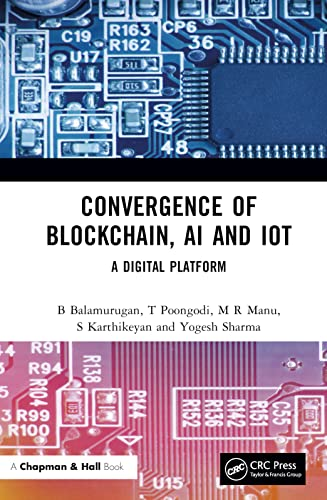
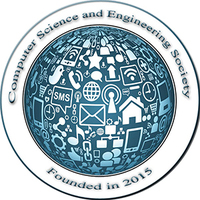

Academician, published author, and researcher specializing in AI and IoT. Bridging theory and innovation through rigorous research and impactful teaching.
Email: link2karthikcse@gmail.com
Phone: +91-9543277017
I am a passionate academician currently serving as an Assistant Professor at Jain University, Bangalore. With a thesis submitted for my Ph.D. at Galgotias University, my career has been defined by a commitment to fostering innovation in areas like AI, Blockchain, and IoT. Over nearly a decade, I have balanced teaching core CSE subjects with rigorous research, resulting in numerous publications and a published book.
ISTE Member

(2020 - Present)
Contributing to academic excellence and Project Coordinator, IQAC Coordinator.
(2017 - 2020)
Focused on student mentorship and curriculum development in Greater Noida, Moodle Coordinator.
(2015 - 2017)
Building strong foundations for students in Salem, Tamil Nadu, Training and Placement Coordinator.
Dept. of CSE – Cybersecurity, School of Computer Science & Engineering, Jain (Deemed-to-be University)
UNESCO MGIEP – Mahatma Gandhi Institute of Education for Peace and Sustainable Development
NPTEL Certified · Elite + Silver · 79%
leadingindia.ai
McGraw Hill Education
Galgotias University
School of Computing Science & Engineering, Galgotias University
Wipro Mission 10X · Knowledge Institute of Technology
Technology Business Incubator · Kongu Engineering College
ICT Academy · PSG Institute of Technology and Applied Research
Indian Society for Technical Education
LM109489International Association of Engineers
226980Computer Science Teachers Association
56589692
International Computer Science and Engineering Society
3091International Association of Innovation Professionals
56599797